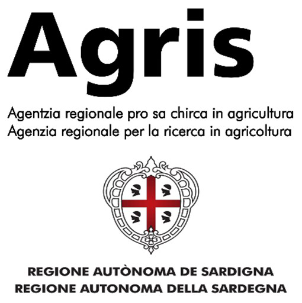

Modulo per segnalazioni pregresse o non raccolte con il protocollo di campo.

Campo obbligatorio. Max 120 caratteri.
Inserisci le coordinate come le conosci: gradi decimali, gradi primi secondi, UTM, testo copiato da GPS o mappa. Non è richiesta l'acquisizione automatica.
Campo obbligatorio. Può sostituire o integrare le coordinate.
Facoltativo: usa la stima più vicina al ricordo o alla foto.
Facoltativo, ma utile per interpretare la segnalazione storica.